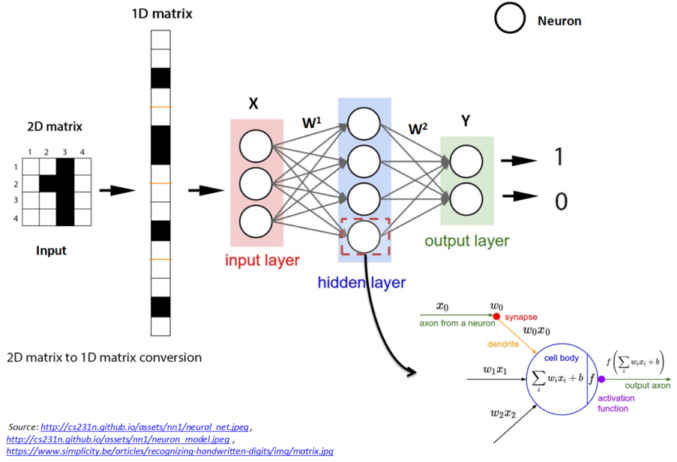
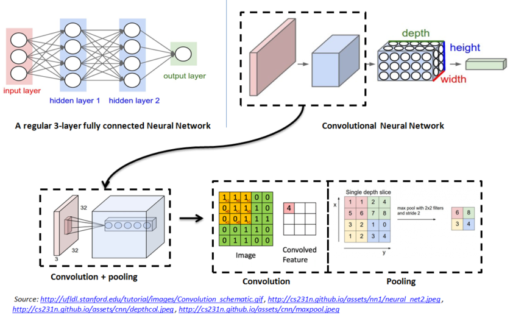
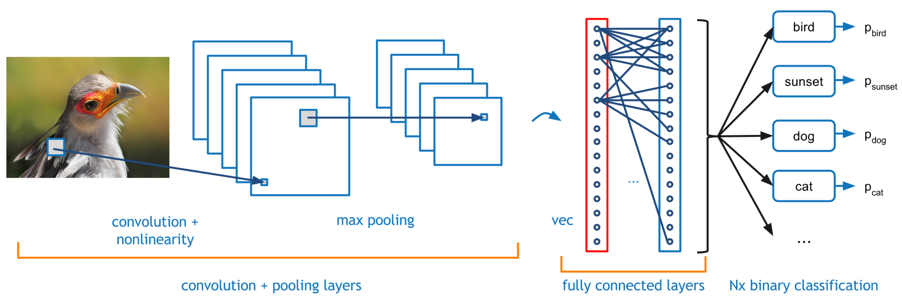
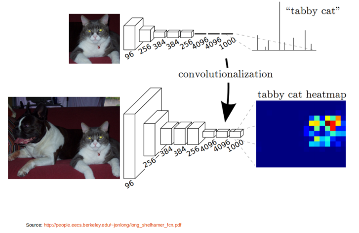

Image Semantic Segmentation Using Fully Convolutional Neural Network
01 Jun 2016Table of Contents:
- Introduction
- Fully Connected Neural Network
- Convolutional Neural Network (CNN)
- Fully Convolutional Neural Network (FCN)
- References
Introduction
In this post, I will try to give a quick theoretical background to Fully Convolutional neural Network (FCN) and give a little hands on understanding and training a deep FCN for Image Segmentation task. Minimal knowledge of neural network and convolutional network is assumed.
Fully Connected Neural Network
|  |
Figure 1.1 shows a simple neural network with input layer, output layer and one hidden layer.
A neural network is composed of layers, each layer consists of number of neurons. Each layer is connected to next layer through some connections which are defined using weights \(W^i\). A neuron is a computational unit, which takes the input \(X\) and outputs \(Y = f(W*X)\), where \(f()\) is a non-linear function like sigmoid, ReLU. Neurons are also called as activation units.
Every neuron in a layer is connected to every other neurons in the next layer. These type of networks are called Fully connected neural networks.
In fully connected neural network, whatever may be the original input structure, it is converted to 1-D matrix / vector before it is fed to the input layer. Outputs will also be 1-D vector. This is illustrated in Figure 1.1.
We learn the weights \(W^i\), by backpropogating the errors through intermediate layers in conjunction with optimization methods such as Gradient Descent and Stochastic Gradient Descent algorithm.
Convolutional Neural Network (CNN)
|  |
Figure 1.2 shows the convolutional neural network architecture
Unlike regular neural networks, the layers in CNN have neurons arranged in 3 dimensions: width, height and depth. Here depth refers to the third dimension of the input. For example, in case of color image third dimension is the number of channels
CNN has three types of layers namely Convolution, Pooling and Fully Connected (FC) layers
Every layer of a CNN transforms the 3-D input volume to a 3-D output volume of neuron activations. This is done using operation called as Convolution and Pooling.
Convolution: It is a linear transformation which respects the ordering of the input data
- Convolution operation is sparse in CNN, i.e., only a few input units contribute to a given output unit
- It reuses the parameters i.e., same weights are applied to multiple locations
- Convolution operation preserves the structure of the input data (eg. Image, Sound clips) unlike fully connected neural network where any form of input is always converted to 1-D vector and all the intermediate layers are 1-D vectors.
- Preserving the input structure helps us to visualize the intermediate layer outputs in CNN and enable us to make useful interpretations and observations in different layers of the network.
Pooling: Pooling operation provide invariance to small translations of the input. Different kinds of pooling functions are known namely max-pooling and average pooling.
Both Convolution and Pooling operations are illustrated in Figure 1.2
- In a typical CNN, final layer will always be a FC layer as shown in Figure 1.3,
Neurons in a fully connected layer have full connections to all activations in the previous layer,
as seen in regular Neural Networks.
Figure 1.3: Fully connected layers in CNN 
Fully Convolutional Neural Network (FCN)
Fully Convolutional Neural Network is nothing but CNN, except that final FC layer(s) in CNN are converted to convolution layers, as simple as that. Figure 1.3 illustrates this.
|  |
- Transforming FC layers into convolution layers in CNN produces an efficient network for end-to-end dense learning as in case of Image Segmentation
Let us get a quick hands on how to convert a CNN to FCN using Caffe tool. Caffe is a Deep learning framework by the BVLC
Hands on - Transforming CNN to FCN
- Let's take the standard Caffe Reference ImageNet model CaffeNet and transform it into a fully convolutional net for efficient, dense inference. The code is extracted from the cafee net surgery example Please refer to this post for step by step explanation